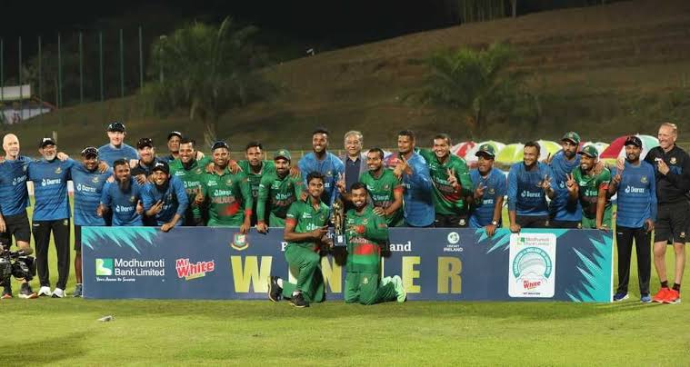

Bangladesh achieved yet another clean sweep against Ireland.
Bangladesh achieved yet another clean sweep against Ireland in the recently concluded three-match ODI series. The Tigers were in a series of achievements, with their pace bowlers performing brilliantly throughout the series. The team's captaincy was also proven successful once again, making it a significant win for Bangladesh.
In the first match, Bangladesh scored a massive total of 338 runs, with the help of impressive performances by Shakib Al Hasan (93 runs in 89 balls), Towhid Hridoy (92 runs in 85 balls), and Mushfiqur Rahim (44 runs in 29 balls). This was the highest-ever score for Bangladesh in an ODI match. The Bangladeshi bowlers also excelled, restricting Ireland to 155 runs with the help of 4-42 by Ebadot, 3-43 by Nasum, and 2-15 by Taskin Ahmed. Bangladesh claimed a massive victory of 183 runs, making it their biggest ODI win ever.
In the second ODI, Bangladesh continued their dominance in the batting department, breaking their previous match record by scoring 349 runs with the help of centuries by Mushfiqur and 70 runs by Liton Das. Unfortunately, rain stopped the game, and the match was declared a draw.
In the last game, Ireland decided to bat first, but they could only manage to score 101 runs. Hasan Mahmud claimed his first-ever five-wicket haul in ODIs. It was also the first-ever ODI match for Bangladesh, where all the wickets were taken by the pacers. Taskin took three, and Ebadot took the remaining two wickets. Bangladesh chased the target of 102 in just 13.1 overs, with all their wickets in hand. Liton Das scored another 50, and the skipper Tamim Iqbal contributed 41 runs in 41 balls.
Bangladesh won the series by (2-0), dominating throughout the three matches. Mushfiqur Rahim was awarded the player of the series for his outstanding batting performances in the first two games. With this victory, Bangladesh gained a lot of confidence for the upcoming Asia Cup and World Cup.
Overall, the Bangladesh cricket team showed a remarkable performance throughout the series, with both their batsmen and bowlers performing exceptionally well. This clean sweep win will undoubtedly boost the team's morale, giving them the confidence to perform even better in the upcoming matches. The captain's leadership skills were also commendable, proving to be a significant factor in the team's success. Bangladesh will now look forward to maintaining this momentum in the upcoming tournaments.